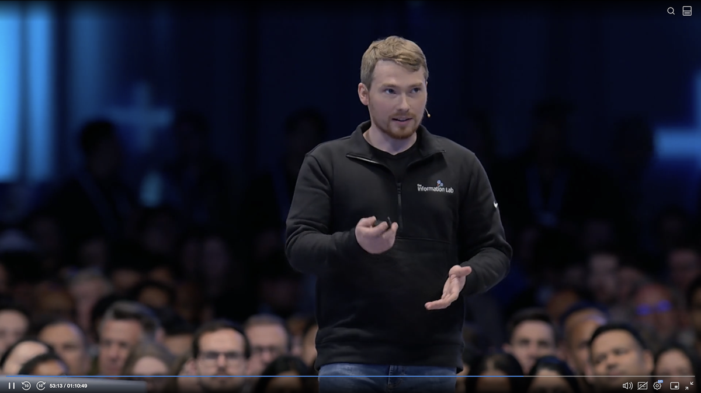
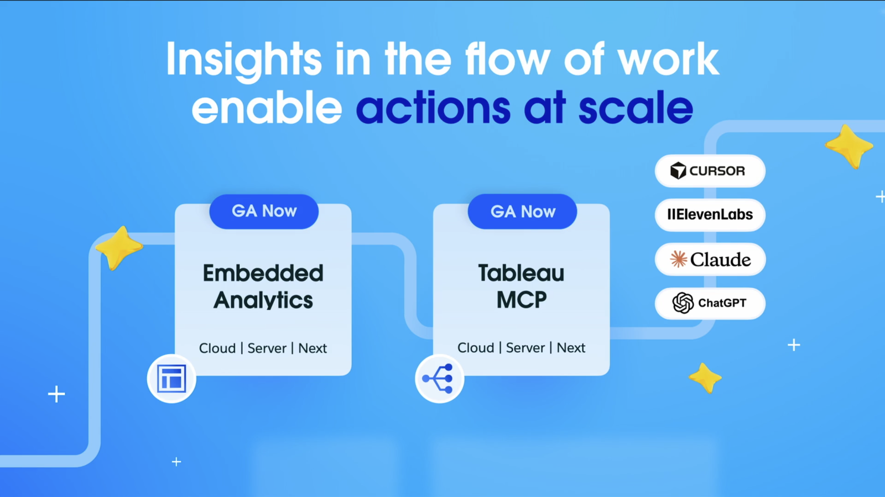
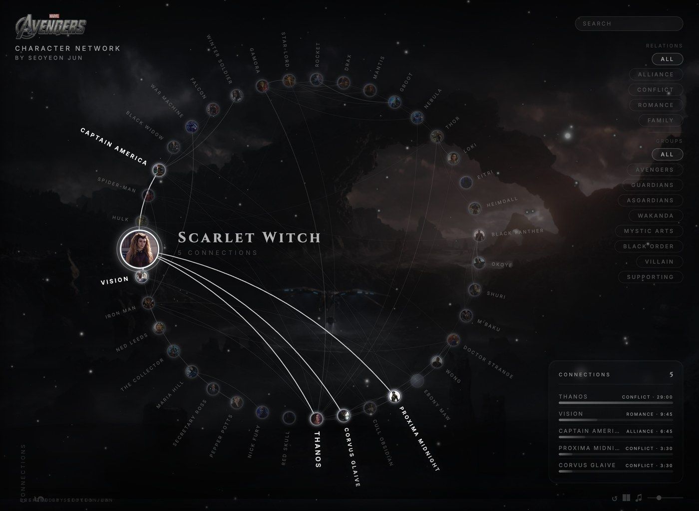

Claude Code와
Tableau MCP로 만드는
AI 분석 워크플로우
Tableau 전 · 중 · 후의 반복 업무 자동화
AI는 Tableau를 대체하지 않는다
분석가가 Tableau에 집중할 수 있도록 반복 업무를 대신한다.


AI가 들어갈 자리
Tableau 분석 업무에서 AI가 맡을 구간
1.1 AI · 사람 · Tableau 역할 분담
같은 기준으로 본 셋의 담당 구간
- 데이터 구조 파악
- 결측 · 이상치 초벌 점검
- EDA와 차트 초안
- 문서와 보고서 초안
- 분석 질문 정의
- 지표와 기준 확정
- 결과 해석
- 최종 의사결정
- 신뢰할 수 있는 데이터 모델
- 인터랙티브 탐색
- 권한과 거버넌스
- 배포 · 공유 · 구독
1.2 전체 워크플로우
Tableau 전 · 중 · 후로 나눠 본 오늘의 지도
EDA
KPI 초안
메타데이터 확인
변경 점검
해석
배포 · 공유
1.3 Tableau가 계속 맡는 것
AI 툴 단독으로 대체되지 않는 플랫폼 운영 계층
| 운영 항목 | Tableau 플랫폼 | AI 툴 단독 |
|---|---|---|
| 데이터 새로고침 | 추출 스케줄 · 실패 알림 · 재시도 | 요청 시점 1회 실행 |
| 행 수준 보안 | 같은 대시보드 · 사용자별 다른 데이터 | 권한 체계 별도 구축 필요 |
| 지표의 정본 | 인증 데이터 원본 · 시맨틱 모델 3,300만 개 | 대화마다 재계산 · 답 변동 위험 |
| 연결 | 커넥터 100+ · 라이브와 추출 병행 | 연결마다 직접 구현 |
| 감사 추적 | 조회 · 권한 변경 이력 기록 | 대화 로그뿐 |
"AI can generate charts. Tableau defines the truth those charts are built on." · Southard Jones · Tableau CPO · 2026.03
반복 분석 업무
자동화
Before Tableau · Claude Code가 맡는 구간
2.1 기존 방식 · 프롬프트 이어 붙이기
분석 한 건에 들어가던 프롬프트 순서
2.2 프롬프트 방식의 한계
두 번째 프로젝트부터 커지는 비용
매번 드는 비용
- 같은 프롬프트를 프로젝트마다 다시 입력
- 앞 답변이 길어지면 순서 누락
- 중간에 끊기면 앞 단계부터 재실행
남지 않는 결과
- 중간 산출물이 대화 안에 흩어짐
- 지표 정의 재확인 어려움
- 사람마다 달라지는 작업 기준
2.3 Agent · Rule · Skill
프롬프트 입력 대신 역할과 기준 미리 정의
단계별 역할
단계별로 읽을 것과 남길 것을 사전 정의. 사람이 순서를 기억할 필요 없음
공통 분석 기준
모든 단계에 동일 기준 적용. 지표 정의 우선, 절대값과 상대값 혼용 금지, 카드 제목은 결론형 또는 질문형
실행 순서
실행 순서와 실패 시 재개 지점의 문서화
2.4 에이전트 구성
단계별 담당 작업과 산출물 사전 정의
| 에이전트 | 하는 일 | 남기는 것 |
|---|---|---|
| @data-ingestion | 컬럼과 타입, 결측 훑기 | 데이터 프로파일 |
| @eda | 분포 · 이상치 · 변수 간 관계 확인 | EDA 요약 |
| @problem | 무엇에 답할지 확정 | 문제 정의 |
| @metrics | 지표 이름 · 계산식 · 분모 확정 | KPI 정의서 |
| @analysis | 세운 가설 검증 | 분석 리포트 |
| @dashboard | 차트 선택과 레이아웃 기획 | 대시보드 |
| @report | 임원 보고용으로 정리 | 원페이지 보고서 |
2.5 실행 흐름
자료 투입 후 다섯 단계 순차 실행

2.6 단계별 산출물
01 / 07 · @data-ingestion · 데이터 구조 검증
sample_sales.csv · 24행 × 12컬럼 · 2026-01-05 ~ 03-18 · 결측 0건 · 중복 0건
| 컬럼 | 타입 | 역할 |
|---|---|---|
| date | 날짜 | 시계열 기준 |
| revenue · cost · discount | 수치 | 수익성 계산 |
| test_group | 범주 | A/B 테스트 그룹 |
→ @eda: profit 컬럼 없음 · revenue - cost 계산 필요 · Furniture 고할인 주목
데이터 구조 검증
- 타입 · 결측 · 중복 점검
- 다음 에이전트 인수인계 메모
2.6 단계별 산출물
02 / 07 · @eda · 분포 · 관계 탐색
1. Furniture 마진 10.7% · Technology(34.6%)의 1/3 수준
2. B그룹 전환율 +1.1%p · 매출 +$11K
3. 2월 $164K → 3월 $114K · -31%
| 총 매출 | 전체 마진 | 전환율 | AOV |
|---|---|---|---|
| $397,130 | 30.6% | 12.6% | $121 |
분포 · 관계 탐색
- 발견 3가지로 압축
- 검증 전 수치는 후보로만 표기
2.6 단계별 산출물
03 / 07 · @problem · 답할 질문 확정
Q1. Furniture 마진 10.7%의 원인 · 가설: 할인율 17.7%의 직접 잠식
Q2. B그룹 전환율 우위 +1.1%p의 유의성 · 가설: 가격 신호 효과
Q3. 3월 급락 -31% · 구조적 vs 일시적 · 가설: Technology 대형 거래 집중
→ @metrics: 카테고리별 마진율 · 할인 구간별 전환율 · A/B 그룹별 지표 요청
답할 질문 확정
- 가설 · 중요도 · 성공 기준 명시
- 우선순위 Top 3 선정
2.6 단계별 산출물
04 / 07 · @metrics · 지표 계산식 확정
| KPI | 정의 | 현재값 |
|---|---|---|
| 전체 마진율 | Gross Profit / Gross Revenue | 30.6% |
| 전환율 (CVR) | orders / visitors | 12.6% |
| 평균 주문액 (AOV) | revenue / orders | $121 |
| A/B 전환율 차이 | B - A · %p 절대값 | +1.1%p |
지표 계산식 확정
- 이름 · 분모 · 단위 고정
- 이후 모든 단계의 기준 문서
2.6 단계별 산출물
05 / 07 · @analysis · 가설 검증
1. 할인 17.7% → 마진 10.7% · 할인 10%p 축소 시 +$6~8K 추정
2. 할인 줄인 B그룹이 전환율도 우위 · 표본 24행 · 방향성 참고
3. 3월 급락 = Technology 단일 이슈(-77%) · 나머지 카테고리는 성장
대시보드 한 줄: "Furniture 할인 축소와 Technology 분산이 수익성 개선 레버"
가설 검증
- 방법론 선택 근거 기록
- 확정 불가 항목은 주의 표기
2.6 단계별 산출물
06 / 07 · @dashboard · 시각화 시안
시각화 시안
- 차트 선택과 배치 완료
- KPI 카드 · 추세 · 비교 · 지역 구성
2.6 단계별 산출물
07 / 07 · @report · 임원 보고 요약
한 줄 요약: Furniture 고할인 구조와 Technology 매출 집중이 수익성의 두 리스크
1. Furniture 할인의 마진 잠식 · 축소 시 +$6~8K 추정
2. 3월 급락 = Technology 단일 이슈 · 포트폴리오 분산 필요
3. 할인 줄인 B그룹의 전환율 우위 · 표본 주의 · 방향성 참고
임원 보고 요약
- A4 한 장 · 결론 먼저
- 근거 수치 병기
Tableau 자산과의
연결
In / Around Tableau · Tableau MCP가 맡는 구간
3.1 Claude Code 단독 사용의 단절
업로드한 파일로 한정되는 조회 범위
Claude Code가 볼 수 있는 것
- 업로드한 CSV
- Excel
- 로컬 문서
회사에 이미 있는 것
- Tableau 데이터 원본
- 워크북과 뷰
- 계산 필드
- 대시보드
- 프로젝트와 권한
AI가 Tableau를 읽는 공식 통로
조회 전용 · 사용자 권한 그대로 · 권한 밖 자산 차단
3.3 Tableau Conference 2026
키노트 선언 · Agentic Analytics Platform
- 아래층 · 데이터와 지표의 뜻을 한곳에 정리 (Knowledge Engine)
- 위층 · 그 정리 위에서 답을 찾고 실행까지 (Decision Engine)
- 새 제품 아님 · 쓰던 Cloud · Server · Desktop 그대로
- MCP · 이 정리된 내용을 외부 AI가 읽어가는 문
요약: 대시보드 보는 도구에서 AI가 일하는 기반으로

3.4 키노트 데모 · Tableau MCP GA
Insights in the flow of work · 작업 흐름 속 인사이트
- Tableau MCP · Embedded Analytics 정식 출시(GA) · Cloud · Server · Next
- 연결 파트너: Claude · Cursor · ElevenLabs · ChatGPT
- Will Sutton(The Information Lab · Iron Viz 2022 우승) 시연 · 대시보드 밖 DataDev 앱 구동
- 키노트 시연: 재고 불일치 발견 → 창고 이동 요청까지 에이전트 실행

Will Sutton · The Information Lab

3.5 MCP로 처리하는 업무
사람이 Tableau를 열어 하나씩 확인하던 작업
조회 범위
- 워크북과 뷰 찾기
- 뷰 데이터 가져오기
- 필드와 메타데이터 확인
- 대시보드 이미지 가져오기
- 프로젝트와 권한 확인
요청 예시
3.6 대시보드 QA 워크플로우
한 흐름 안에서의 두 도구와 사람의 분담
3.7 활용 사례
01 / 03 · 주간 점검 리포트 · 3.6 워크플로우의 실행 결과물

3.7 활용 사례
02 / 03 · 대시보드와 대화 · Sales Funnel Dashboard 대상

3.7 활용 사례
03 / 03 · 제작 구조 질의 · Tableau Public MCP · 인증 불필요

MCP의 시작점은 '대시보드 자동 생성'이 아니라
사람이 Tableau를 열기 전에
확인하던 일을 먼저 정리하는 것
도구 8종 전부 조회 · 정리 범위 · 판정과 배포는 사람
3.8 활용 도구 8종
Tableau를 열기 전에 AI가 먼저 훑어보는 일 · 전부 실행 화면
 월요일 아침 브리핑
월요일 아침 브리핑 QA 체크리스트 생성
QA 체크리스트 생성 KPI 정의 감사
KPI 정의 감사 자산 카탈로그
자산 카탈로그 미사용 · 중복 정리 후보
미사용 · 중복 정리 후보 임원 보고 초안
임원 보고 초안 장애 · 운영 점검 알림
장애 · 운영 점검 알림 리뉴얼 전 진단
리뉴얼 전 진단3.8 월요일 아침 대시보드 브리핑
활용 도구 01 / 08 · 매주 월 08:30 자동 실행
- 지난주 대비 ±10% 급변 지표 · 새 이상치 · 오늘 열어볼 뷰 정리
- 워크북 9개 스캔 · MCP 조회 31회 · 6분 소요
- Slack #data-daily 자동 발송 · 판정 없이 확인 후보까지만
3.8 대시보드 QA 체크리스트
활용 도구 02 / 08 · 배포 전 자동 생성
- 워크북 구조 기반 점검 12항목 자동 생성
- 계산식 불일치 · 필터 누락 · 지표명 혼용 · 미갱신 뷰 탐지
- 대조 기준: KPI 정의서 · 전 버전 · 배포 판단은 담당자
3.8 KPI 정의 감사 리포트
활용 도구 03 / 08 · 분기 1회 실행
- 같은 이름 「매출」 3곳 · 서로 다른 계산식 2종 탐지
- 워크북 XML 파싱으로 계산식 원문 대조
- 영향 뷰 9개 표시 · 정본 결정은 거버넌스 회의
3.8 Tableau 자산 카탈로그
활용 도구 04 / 08 · 주 1회 자동 갱신
- 워크북 32개 · 뷰 218개 · 원본 11개 자동 문서화
- 소유자 · 데이터 원본 · 용도 한 줄 설명 생성
- catalog.md 산출 · 신규 입사자 온보딩용
3.8 미사용 · 중복 정리 후보
활용 도구 05 / 08 · 월 1회 실행
- 90일 무조회 뷰 14 · 중복 의심 3쌍 · 소유자 부재 2 탐지
- 구조 유사도 · 조회 기록 근거와 권고 병기
- 삭제 실행 없음 · 보관 이동과 재지정 후보까지만
3.8 임원 보고 초안
활용 도구 06 / 08 · 매주 월 07:00 생성
- 이번 주 달라진 것 3가지 · 근거 뷰 명시
- MCP 이미지 추출로 주요 뷰 2개 자동 첨부
- Word 초안 저장 · 발송 판단은 사람
3.8 장애 · 운영 점검 알림
활용 도구 07 / 08 · 매일 08:00 자동 점검
- 추출 새로고침 실패 · 원인 추정 · 영향 뷰 표시
- 14일 이상 미갱신 데이터 · 소유자 부재 워크북 감지
- Slack #data-ops 발송 · 재시도 실행은 관리자
3.8 대시보드 리뉴얼 전 진단
활용 도구 08 / 08 · 리뉴얼 착수 전 1회
- 시트 24 · 계산 필드 41 · 조회 상위 3뷰 92% 집중 분석
- 남길 것 · 버릴 후보 · 통합 후보 구분
- 사용 로그 90일 근거 · 리뉴얼 설계는 담당 분석가
3.9 업계 활용 동향
Tableau 전문 조직들의 MCP · AI 접근
Public MCP로 팀 교육
- Tableau Public MCP 공개 · Will Sutton 제작
- "How was this viz made?" 프롬프트 하나로 제작 가이드 생성
- LOD 같은 주제별 교육 세션 자동 구성
평가 주도 에이전트 방법론
- 거버넌스 · 컨텍스트 · 평가를 설계 단계부터
- 10단계 프레임워크로 파일럿 → 프로덕션 전환
- SME 참여를 필수 요건으로 규정
시맨틱 레이어 중심
- CPO 기고: AI는 차트 생성 · truth 정의는 Tableau
- 조직들이 관리해 온 시맨틱 모델 3,300만 개
- OSI(Open Semantic Interchange) 표준 주도
3.10 연결 방식
환경에 따라 두 갈래
공식 호스팅 서버
셀프 호스팅
Tableau의
표현 범위 확장
기본 차트로 표현하기 어려운 시각화의 처리
4.1 기본 차트로
어려운 시각화
- 인물 사이의 관계처럼 노드와 연결선으로 봐야 하는 데이터
- Tableau 기본 차트로 표현 불가
- Claude Code로 제작한 D3 기반 뷰 확장
- Source · Target · Strength · Type 선반 연결로 동작

4.2 Tableau 안에서
실행되는 결과
- 워크시트 Marks 카드에 확장 추가
- 선반에 필드 연결 시 즉시 렌더링
- 데이터 교체 후에도 동일 확장 동작
Tableau가 할 수 있는 일을 넓혔다.

4.3 직접 제작 ·
Retention Matrix
- Game Log Analytics Dashboard 디자인 기준 · KPI 카드 · 스파크라인 · 코호트 히트맵
- 선반 2개 · User 차원 · Event Date 날짜
- LOD 계산 필드 없이 주간 코호트 리텐션
- 순수 HTML · JS · 빌드 없음 · GitHub Pages 호스팅
- .trex 하나로 Marks 카드에 추가

실무 도입 순서
어디서부터 시작할 것인가
4.1 실무 도입 순서
한 업무에서 신뢰도 확인 후 확대
WRAP UP
Claude Code는 반복되는 분석 절차를 재사용 가능한 워크플로우로 만들고,
Tableau MCP는 그 워크플로우를 실제 Tableau 환경과 연결합니다.
사람은 분석 기준과 최종 판단에 집중하고,
Tableau는 신뢰할 수 있는 분석과 공유의 중심으로 남습니다.
Q & A